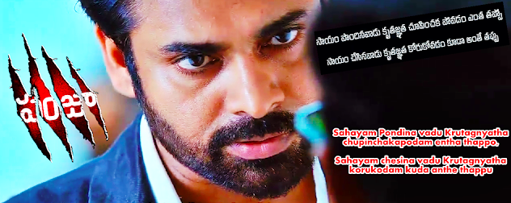

The CONFLICT

We usually solve many conflicts that arise outside us; but we usually submit ourselves to the conflict within us.
Let us enjoy the story of Balu who overcame his own internal conflict.
Balu is a happy going kid who wants to be happy and make the surroundings happy. However, he has his own short comings of being short tempered when things are not going in the right direction as per his thought process. A moment in his life.
Scenario: Balu is in his third year of engineering and by gods grace he is gifted with a beautiful girl friend, Anuhya. Being month of November, he had fixed a date today with Anuhya at a popular 4 star restaurant in the town for candle little dinner.
Time is 3:30 P.M. { 15th of Nov }
Balu said to himself, ” It is a tiring day!!! My brain got overloaded with more new stuff to digest. Let me hit bed some time.” Being a studious person as well he set-up an alarm for 4:00 P.M. in his Nokia 105 series feature phone.
At about the same time, when he is about to slip into deep sleep. He got a phone form an unknown number. He ignored for the first time. But it rang again.
With much hesitation, he picked his mobile and said, “Hi, This is Balu. Can I know who is this”
“Hey!!! it’s me.” said a sweet voice and her excitement can be felt by her tone.
“I’m sorry. I couldn’t recollect you ma’am. Can you help me out please”
“Darling!!! It’s me your Sahasra!!! You forgot my voice.”
Balus’ eyes got wide opened as if some one slapped on his cheek.
“Darling!!! where are you! As was in deep sleep i didn’t paid attention to your voice” He replied both with excitement & confusion.
“I’m at your college tower. I would like to meet you in person. Is that possible for you now please!!!”
Being more perplexed, he responds calm and cool voice, ” Try to guide yourself to the Trishna SuperMarket outside our campus. Will meet you in 10 minutes.”
High & Intensely confused Balu got dressed to his best and started walking to the super market. However, his mind got traversed four years back when he first met Sahasra in his Plus 1. They have been together for almost one and half year; before they broke up on petty issues. It’s been 2 years since they met face to face.
Being an odd time for anyone to see outside. He could spot a girl draped herself in pink coloured saree. Suddenly his vision started to become blurred as his eyes turned misty. He realised that the relative distance between them closing as a faster face than supposed to be. And then a sound “thudd” has generated when their bodies got touched against each other and it remained in that position for a minute.
The girl took the initiative to break the body lock and moved to another lock with her lips and show cased her long lost intimacy. Balu being on the receiving end doesn’t have any clue; however, his eyes responded by turning from misty to watery and then rolled on his checks and then to her neck.
“Sahasra!!! How on earth are you here!!! It is unimaginable and unbelievable!!!” Balu spoke with affection.
“Darling!!! Your Social Pages has every thing about you. However, i had to travel 120 KM by road to speak to you in person than over mobile”, she spoke with a sense of satisfaction and accomplishment.
“I love you baby”, saying this Balu gave another kiss to her, ” How do you react if i would say i’m already committed with another babe in this college?”
“It is none of my business what has happened in this duration. But now i need you for rest of my life!!!” She replied on a defensive note but with a smile.
And then she continued, ” Are u really committed ? Are you kidding me ?”
Balu was unprepared to this question and then he lied by saying, ” Of Course NO!!!. Love never dies but my current focus is on my studies and placement.”
Sahasra’s expression looks relieved and her face glowed like an Olympic Lantern, ” I know my Balu. He may commit mistakes but not at the cost of my-stakes”
He hugged her as a response to her dialogue and then said, “Darling!!! Let me get you something from the Super Market and then we will go out for some time. Hope that is in your plan today?”
“Yes. Yes. I’m all yours”
Balu quickly slid into the supermarket and while shopping for Little Hearts & Dairy Milk he called Anuhya and spoke, ” Babe!!! A childhood friend of mine has visited the town for a paper presentation in another college. We might need to cancel our outing today. Sorry for this Babe.”
Anuhya replied casually,” Babe!!! It is fine. Our last outing was just a week ago. It should be fine. Be safe and drink less.”
“Thanks a lot Anu. Love you”
“Love you too Babe. Let us catch tomorrow morning at the Learning Centre”
Balu with a relieved mind came out of the super market and shared the biscuits and chocolate with her and then they departed slowly by walking on the side of the road till they found a commute to the downtown.
While they were in the cab, Sahasra asked, ” Did you ever thought to make our relationship to fusion again during this duration ?”
Balu responded in anger, ” I think you know the answer and how much i had tried at that time. Let’s not dig the past Sahasra.”
Sahasra smiled and moved closer to him and leaned her head on his left shoulder and said, ” Sorry Darling!!! I Love you to my life. I’m happy that you accepted me with open arms. My respect on you has moved to a higher level ”
At the same time he got a classic message beep of Nokia phone which read as “Miss you Babe” and he quickly replied as ” Mis u 2 Anu” { Like an army person } and changed the phone profile to silent mode.
They shopped till dusk in the downtown and then Balu took her to the same four star hotel for a candle light dinner. Balu and Sahasra enjoyed together to their best and to a third person it looks like they are “made for each other”.
He dropped Sahasra at her College Hostel and said, ” I have never been soo happy in my life. You should have come little early and we would had many more beautiful memories. I Love you a lot Saha!!!” And he hugged her tightly and gave a bidding liplock for the night.
Time is 11:30 P.M. { 15th of Nov }
Balu is exhausted, exalted & distracted; In such a state he boarded the bus which might take three hours to reach his destination. He gone to the last row of the bus and slept on it like as if it is an Indian railway berth. At about the same time, he received two beeps to his mobile from either of his girl friends which read as ” Can we speak now ?“. In reply he said,” I’m too tired Love. Let us talk tomorrow.” And then he slept off.
Time is 6:30 A.M. { 16th to Nov }
Balu doesn’t have clue how he reached to his hostel after he slept in the bus. He got quickly refreshed and reached to the Learning Centre to meet Anu.
He continued with this complicated parallel love format for almost 15 days. During this 15 days his confidence and self esteem has plummeted to the lowest level; which left him with no other choice but to reach out to his saviour senior sister, Pravallika. ” Akka, need your help ; can we meet now”
They met over for dinner in the college campus restaurant and Balu explained his current situation to Pravallika while they were having Manchow Soup.
She smiled and replied, ” What do you want??”
Balu Passionately replied, ” I want both of them. If god has given that option I would choose it.”
She again laughed and replied, ” You aren’t a God or a Movie Hero to have that option. I’m still unable to understand how come you are loving two girls with same amount of passion. It is still a riddle for me. ”
“Me too. I don’t have any clue to what am i doing Akka.” and continued in Telugu, “ Preminchadam Goppa Kadhu. Preminchabadam Goppa Antaru. Kani Iddari tho Preminchabadam Narakam Akka. Naramkam”. { It Means - There is a saying Sister that loving someone is not great achievement but receiving Love from other is the greatest achievement for a human. However, receiving Love from both of them is a Hell. It is Hell. } and continued,” I’m angry with myself Akka”. He said these words with sharp tone and intense passion.
” You may think you are in a fancy state of world. But in reality you are in a state of deep shit.”
Main Course along with starter has came to the table. Waiter was about to server the food on the plates for which Balu has gestured that we will help ourselves.
Pravallika took a bite of Chicken Lollipop and continued, ” Balu, there might be many ways to address to your situation, i would like to give you two extreme solutions to you:
Solution1: Finalize the girl with whom you can live for life long. May be do a SWOT analysis of their qualities or any other things of your interest. Choose the one and Dump the other.
Solution2: Assume that I’m one among those girls and assume that this situation is happening to me currently. What would you do?
You may deserve both of them. Out of them who deserves you the most is it either of them, both of them or …. ”
Balu got further distracted; however, understood the underlying message of Pravallika.
She moved to the main course and continued, ” Remember in four months time you have to sit for placements. Also, you cannot keep everyone happy at the same time. You might need to take care of the larger happiness of life & career. ”
Soon they finished the dinner in Silence and departed quickly.
Next two days Balu has been thinking deeply as if it is a life changing decision and then in the next 15 days he conveyed to either of them that he is in love the other girl and would like to have a breakup on their status quo. It was tough to manage varied emotions of three persons, being a lead in this blog he made it.
On Dec 31st, he met Pravallika at the same restaurant and said, ” Thanks a lot Sister, I’m more relieved now. I might emerge as a cheater for both of them. But it is good for them. Thanks a lot for guiding me and bringing this to the conclusion.”
“It is fine Bro. is Thanks necessary???”
Balu replied, “sahayam pondina vadu kruthagnatha chupaka povadam entha tappo sahayam chesina vadu kruthagnatha korukovadam kuda anthe tappu.”
” Love this. You are learning your lessons. Happy New Year.”
“Happy New Year :)”
———————————————END OF UKNOWN CHAPTER OF BALU ———————————————
Hope you have enjoyed the story of Balu. Some times, we cannot provide the right conclusions for the Inner Conflict. It is always about to overcome them for a positive outlook of life.
JAI HIND!!!
Enjoyed this?